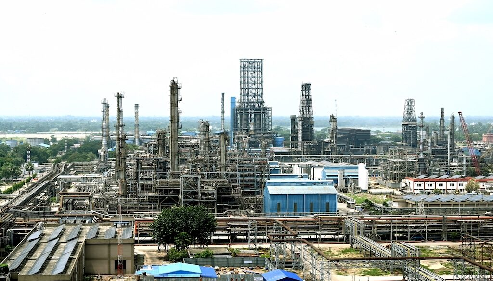
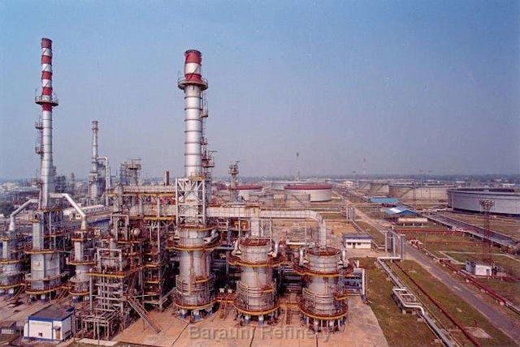

Explore the Industrial Growth and Economic Impact of Begusarai
Begusarai, traditionally known for its agricultural roots, has seen significant industrial development in recent decades. The city is home to several key industries, including manufacturing, textiles, and chemicals. The growth of these sectors has contributed to the region's economic development and has created numerous job opportunities for the local population.
One of the most prominent industries in Begusarai is the textile industry, which produces a variety of fabrics, including cotton and silk. The region’s textile industry is primarily driven by small-scale, family-run businesses that have been in operation for generations. These businesses are known for their skilled labor and craftsmanship, and the textiles produced in Begusarai are in high demand both locally and nationally.
In recent years, Begusarai has seen a surge in industrial investment, particularly in the chemical sector. The establishment of several chemical plants in and around the city has boosted the local economy and created thousands of jobs. These industries specialize in the production of fertilizers, chemicals, and industrial equipment, which are essential for the agriculture and manufacturing sectors of the economy.
Despite the growth of industry in Begusarai, the region faces several challenges. One of the biggest challenges is the lack of infrastructure, particularly in terms of transportation and connectivity. While the region has a rich supply of natural resources and a strong workforce, the absence of modern roads and rail networks has hindered the full potential of industrial growth.
However, this also presents an opportunity for the government and private sector to invest in improving the infrastructure, which could lead to a more robust industrial sector in the future. Moreover, the government’s focus on promoting local industries through various schemes and incentives has the potential to transform Begusarai into a major industrial hub.
 
The industrial growth in Begusarai has had a significant impact on employment. Thousands of people from the surrounding rural areas have moved to Begusarai in search of work in the factories and industrial plants. This migration has led to the development of new residential areas, better education, and healthcare facilities, contributing to the overall improvement in the quality of life for many residents.
In conclusion, the industrial landscape of Begusarai is evolving rapidly, with a mix of traditional and modern industries contributing to its economic growth. The growth of the textile and chemical industries, along with the opportunities for infrastructure development, positions Begusarai as a key player in Bihar’s industrial future.